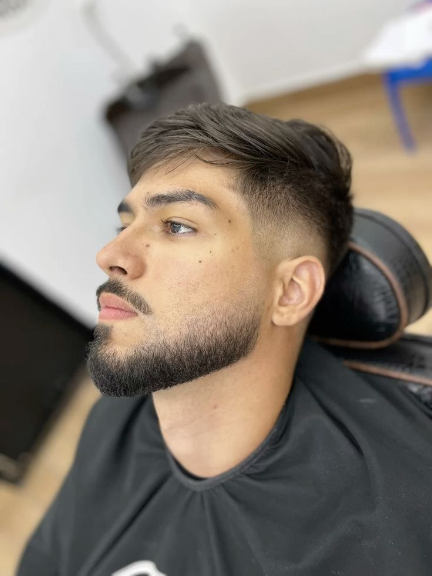

Perfilado clasico
- Definicion de mejillas y cuello.
- Recorte para mantener una forma pareja.
- Acabado con maquina y navaja.
Bs 35
ReservarGaleria de servicios para barbeados.
Bs 35
ReservarBs 40
Reservar
Bs 50
ReservarReserva un perfilado o consulta qué servicio necesita tu barba.